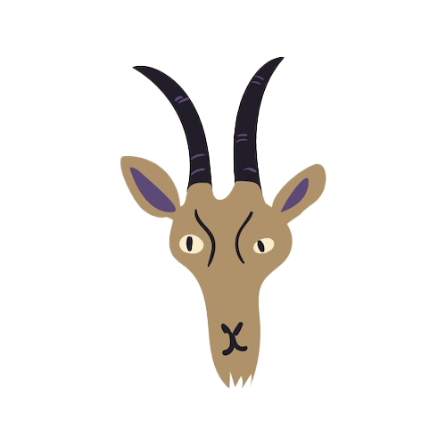

Magaskopet
Generelt
Vædderen er et ildtegn og kendetegnes
ved sin utrolige energi, mod og initiativ. Som en pioner er vædderen altid
klar til at tage føringen og kaste sig ud i nye udfordringer. Denne type er kendt
for sin handlekraft og evne til at tage beslutninger hurtigt – ofte uden tøven.
Vædderen er meget ekstrovert og trives i sociale situationer, hvor den kan dele
sine idéer og føre an. Denne drivkraft betyder også, at Vædderen er
konkurrencemindet og elsker at vinde – uanset om det er i arbejdssammenhænge
eller personlige udfordringer.
Selvom vædderen kan være lidt utålmodig og impulsiv, har den også en enorm
viljestyrke og mod. Den følger sin passion og handler ofte først og tænker senere, hvilket gør dens intuition stærk, men dens behov for logik mindre. Vædderen har et naturligt ønske om at være selvstændig og kæmper for sine mål med en sjælden vedholdenhed.
Se også generelle studietips her
Studietips
Da vædderen elsker en
udfordring, er det vigtigt at holde momentum, når du studerer. Prøv at sætte små konkurrencer
for dig selv – f.eks. hvor hurtigt du kan lære et bestemt emne eller nå et mål. Dette vil holde
dig engageret og fokuseret.
Vædderen trives også bedst i et dynamisk miljø, så sørg for at skifte din arbejdsstilling
eller studieplads regelmæssigt. Tag korte, aktive pauser, hvor du bevæger dig – det kan være
en hurtig gåtur eller lidt motion, så du kan genoplade din energi.
For at undgå at blive utålmodig, kan du bryde større opgaver ned i mindre bidder. Husk at
holde fokus på slutmålet, og giv dig selv en belønning, når du når dine milepæle!

Vædderen
21. marts - 19. april